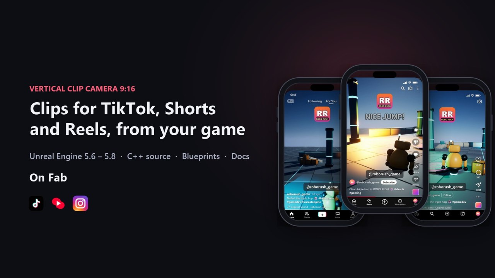
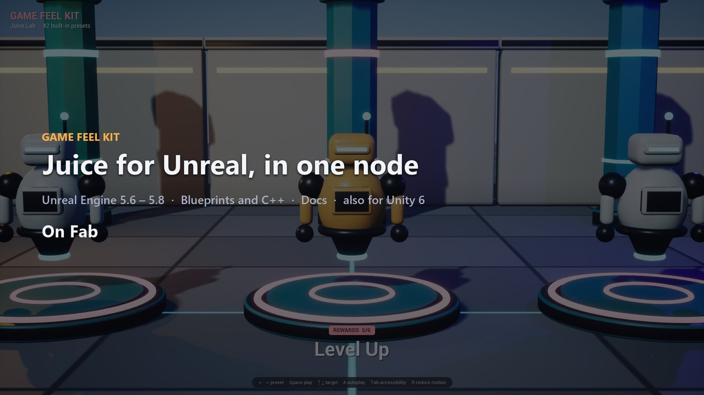

Alice Media documentation
Plugins for Unreal Engine and Unity: quick starts, reference and changelogs.

Vertical Clip Camera 9:16Unreal Engine 5.6-5.8 and Unity 6

Game Feel KitUnreal Engine 5.6-5.8 and Unity 6

Photo Mode KitUnreal Engine 5.6-5.8 and Unity 6

Build Size ReportUnreal Engine 5.6-5.8 and Unity 6

ASCII RenderUnreal Engine 5.6-5.8 and Unity 6

Stylized Water KitUnreal Engine 5.6-5.8 and Unity 6